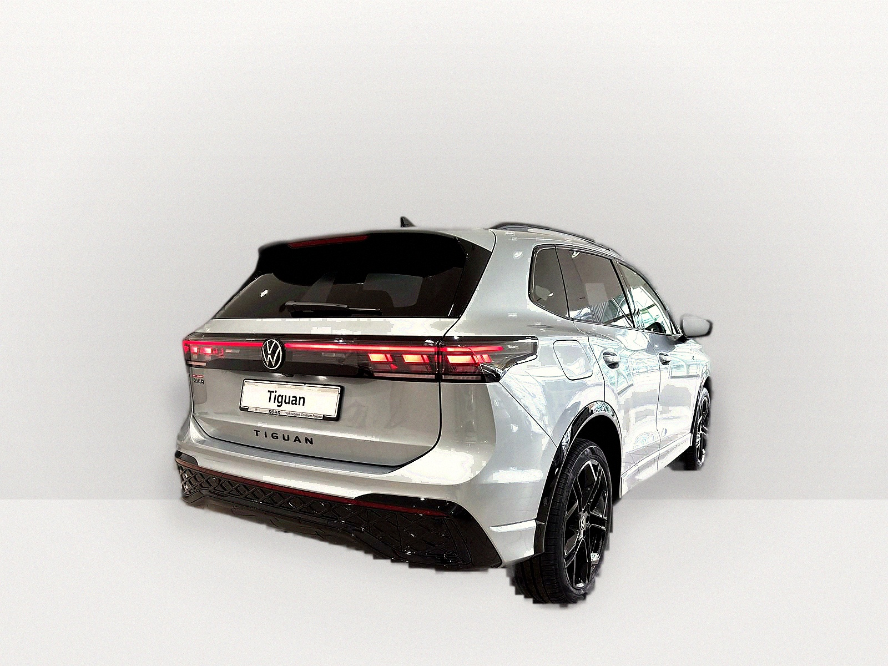
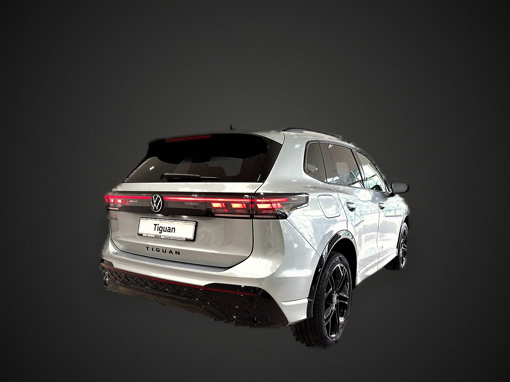
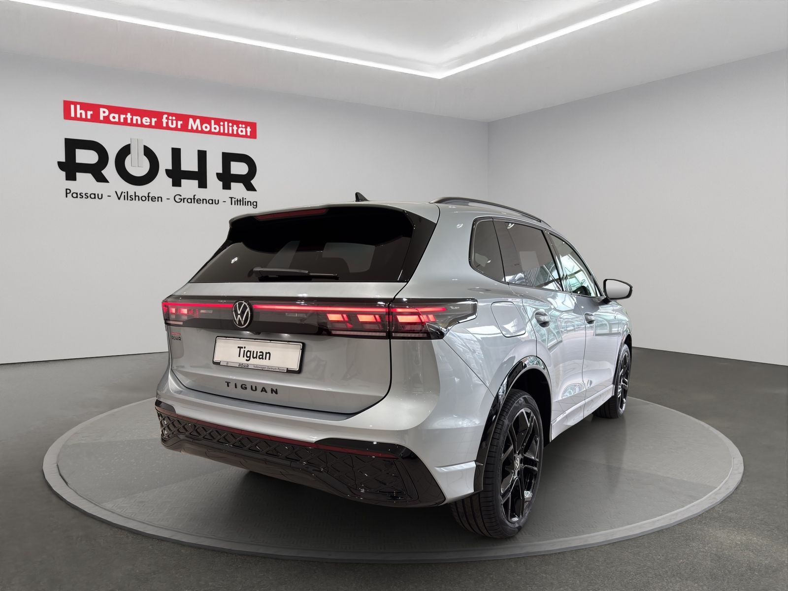

🚗 Rezultate Procesare Profesională - Forecast AUTO

Stil Showroom

Stil Gradient
Comparație: Original vs. Procesat
Imagine Originală

Rezultat Profesional (Showroom)
✨ Caracteristici Implementate
Segmentare AI avansată cu U2Net pentru extracție precisă a mașinii
Rafinare profesională a marginilor pentru aspect natural
Îmbunătățiri profesionale: color grading, reflecții, claritate
Umbre realiste cu perspectivă corectă
Reflexii subtile pe podea pentru stil showroom
Efecte profesionale: vignette, film grain subtil
Balans de culoare optimizat pentru fotografie auto
Procesare GPU pentru performanță maximă